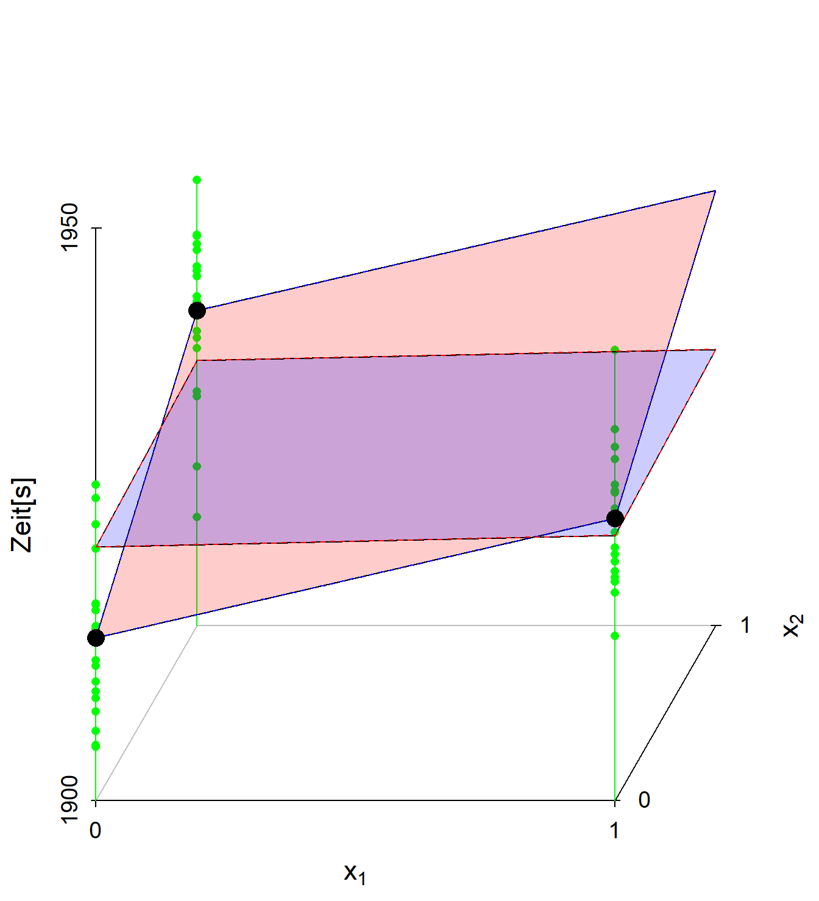
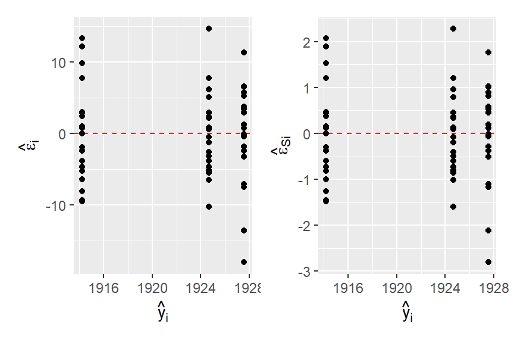
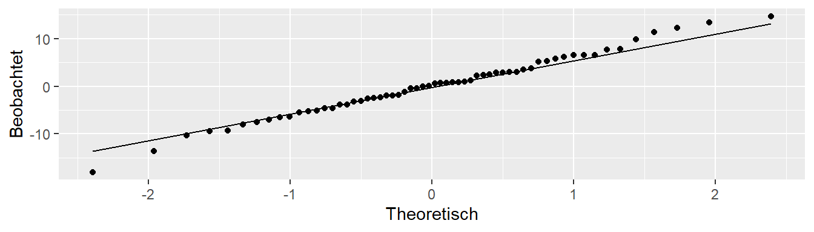
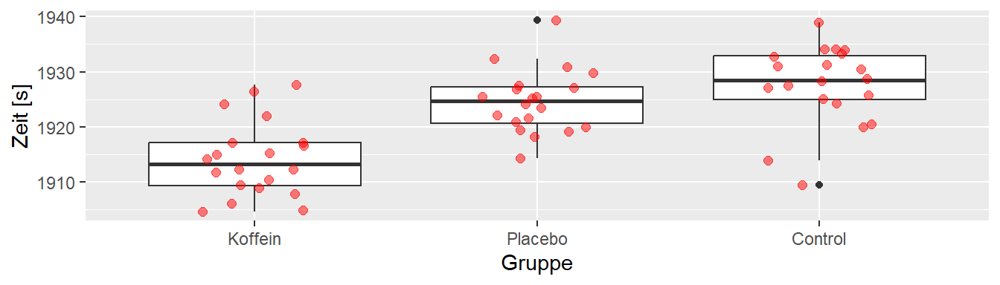
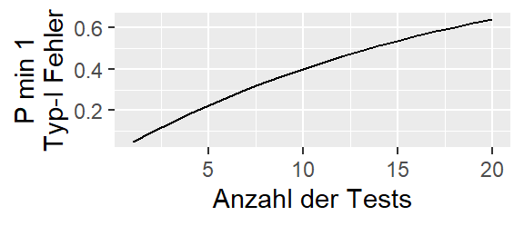
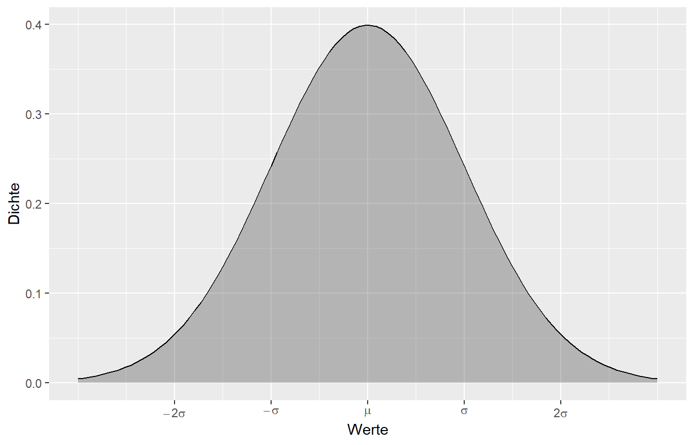

21 Completely Randomized Design
Das erste experimentelle Design, das wir uns anschauen, ist das completeley randomized design. Wir haben unterschiedliche experimentelle Konditionen von denen wir ausgehen, dass diese sich unterschiedlich auf die experimentellen units (EU) auswirken. Beispielsweise wollen wir die Balancierfähigkeit unter drei verschiedenen Konditionen untersuchen, z.B. auf festem Untergrund, auf weichem Untergrund und auf wackeligen Untergrund. Die Balancierfähigkeit ist aber auch durch zahlreiche andere Einflussfaktoren beeinflusst, z.B. Vorerfahrung, Kraftfähigkeit etc. Viele von diesen kennen wir vielleicht gar nicht bzw. für diese zu kontrollieren wäre zu aufwendig. Um diese Störgrößen zu kontrollieren setzen wir Randomisierung ein. Jeder einzelne Versuchsteilnehmer bzw. Versuchsteilnehmerinn soll daher randomisiert auf eine der drei Kondition verteilt werden. Damit werden die Teilnehmer(innen) zu den EUs. Nach Durchsicht der Literatur könnte die Balancierfähigkeit z.B. mit einer Kraftmessplatte erfasst werden. Hieran schließt sich noch die Festsetzung der observational units, d.h. in diesem Falle, der Anzahl der Messwiederholungen an um die Reliabität auf ein gewünschtes Niveau zu heben. Diesen Teil vernachlässigen wir zunächst einmal.
21.1 Das Modell
Um diesem Design ein statistisches Modell anzupassen, müssen wir uns nun Gedanken über den DGP machen. Zunächst einmal wird jede(r) Teilnehmer(in) eine bestimmte Balancierfähigkeit haben. Bzw. wenn wir die Kondition mit dem festen Untergrund als eine Referenzkondition festlegen, können wir davon ausgehen, dass es eine mittlere Balancierfähigkeit gibt und die einzelnen Personen aus der Population um diesen Mittelwert schwanken. Dieser Mittelwert bekommt einen eigenen Parameter \(\mu\). Jetzt gegen wir davon aus, dass die unterschiedlichen Konditionen dazu führen, dass die Basisbalancierfähigkeit von den Konditionen beeinflusst wird. D.h. es kommt zu einer Veränderung oder Abweichung von \(\mu\). Diese Abweichungen bezeichnen wird mit \(\tau_i\) wobei der Index \(i\) dann die jeweilige Kondition \(i\) kennzeichnet. Insgesamt führt dies zu dem Modell:
\[\begin{equation} Y_{ij} = \mu + \tau_i + \epsilon_{ij}, \qquad \epsilon_{ij}\sim \mathcal{N}(0,\sigma^2) \label{eq-ed-crd-model} \end{equation}\]
i = Gruppenindikator, j = experimental unit-indikator, \(\mu\) = Gesamtmittelwert,
Natürlich brauchen wir Replikationen um den Einfluss \(\tau_i\) der Konditionen zu bestimmen. Diese Replikationen, in unsererm Fall die Versuchspersonen, bekommen den Index \(j\).
Die Annahmen des Modells sind dabei:
- Unabhängige Experimental Units (EU)
- Die EUs sind zufällig in die k Gruppen eingeteilt worden
- Die Varianzen \(\sigma_i^2\) in jeder Gruppe \(i\) sind gleich
- Die Werte in jeder Gruppe sind Normalverteilt \(Y_{ij} \sim \mathcal{N}(\mu_i, \sigma)\)
Die statistische Überprüfung führen wir nun wieder mit dem uns bekannten Modellvergleichen durch. Das Modell \(\eqref{eq-ed-crd-model}\) wird als das Full Model angesehen und wir definieren das reduzierte Modell mittels:
\[\begin{equation*} Y_{ij} = \mu + \epsilon_{ij} \end{equation*}\]
Dementsprechend folgt als Teststatistik
\[ F = \frac{\textrm{SSE(R)} - \textrm{SSE(F)}}{\textrm{df}_R - \textrm{df}_F} \frac{\textrm{df}_F}{\textrm{SSE(F)}} \sim F(\textrm{df}_R-\textrm{df}_F,\textrm{df}_F) \]
mit den statistische Hypothesen:
\[\begin{align*} H_0:& \tau_1 = \tau_2 = \ldots = \tau_k = 0 \\ H_1:& \exists\tau_i \neq \tau_j\ \textrm{mit}\ i \neq j, i,j \in \{1,2,\ldots,k\} \end{align*}\]
D.h. wir überprüfen ob die Hinzunahme der Information über die Konditionen (Faktoren) zu einer statistisch signifikanten Verminderung der Residualvarianz führt. Wenn dem nicht der Fall, dann verbessert sich der Modellfit durch die Faktorstufen \(\tau_i\) nicht.
21.1.1 Verbindung Modellhierarchien und BA-ANOVA
Im Bachelor wurde das completely randomized design aller Wahrscheinlichkeit nach unter der Bezeichnung Einfaktorielle ANOVA eingeführt. Was eigentlich nicht viel Sinn macht, da es sich bei der einfaktoriellen ANOVA um eine Analysemethode und streng genommen nicht um ein experimentelles Design handelt. Wenn wir die folgenden beiden Identitäten berücksichtigen.
\[\begin{equation} \sum_i (y_i - \hat{y}) = \sum_i y_i - n \hat{y} = n \hat{y} - n \hat{y} = 0 \label{eq-ed-crd-bar-sum} \end{equation}\]
\[\begin{align} \begin{split} \sum_i \sum_j 2 (y_{ij} - \hat{y}_j)(\hat{y}_j - \hat{y}) &= \sum_j \sum_i 2 (y_{ij} - \hat{y}_j)(\hat{y}_j - \hat{y}) \\ &= 2 \sum_j (\hat{y}_j - \hat{y}) \underbrace{\sum_i (y_{ij} - \hat{y}_j)}_{\text{mit} ~(\ref{eq-ed-crd-bar-sum})=0}\\ &= 2 \sum_j (\hat{y}_j - \hat{y}) 0 = 0 \\ \end{split} \label{eq-ed-crd-cross-sum} \end{align}\]
Dann können wir \(SS_{\text{total}}\) nach dem folgenden Muster aufspalten.
\[\begin{align} \begin{split} \underbrace{\sum_i \sum_j (y_{ij} - \hat{y})^2}_{SS_{\text{Total}}} &= \sum_i \sum_j (y_{ij} - \hat{y}_j + \hat{y}_j - \hat{y})^2 \\ &= \sum_i \sum_j (y_{ij} - \hat{y}_j)^2 + \sum_i \sum_j (\hat{y}_j - \hat{y})^2 - \underbrace{\sum_i \sum_j 2 (y_{ij} - \hat{y}_j)(\hat{y}_j - \hat{y})}_{\text{mit}~(\ref{eq-ed-crd-cross-sum})=0}\\ &= \underbrace{\sum_i \sum_j (y_{ij} - \hat{y}_j)^2}_{SS_{\text{Error}}} + \underbrace{\sum_i \sum_j (\hat{y}_j - \hat{y})^2}_{SS_{\text{Regression}}} \end{split} \label{eq-ed-crd-sse-total} \end{align}\]
D.h. wir erhalten die schon bekannte Aufteilung in \(SS_{\text{Error}}\) und \(SS_{\text{Regression}}\) die uns in der Herleitung von \(R^2\) begegnet ist. Ziehen wir jetzt \(SSE(R) - SSE(F)\) voneinander ab.
\[\begin{align*} SSE(R) - SSE(F) &= \sum_i \sum_j (y_{ij} - \hat{y})^2 - \sum_i \sum_j (y_{ij} - \hat{y}_j)^2 \\ &= \underbrace{\sum_i \sum_j (y_{ij} - \hat{y}_j)^2 + \sum_i \sum_j (\hat{y}_j - \hat{y})^2}_{\text{mit}~\eqref{eq-ed-crd-sse-total}} - \sum_i \sum_j (y_{ij} - \hat{y}_j)^2 \\ &= \sum_i \sum_j (\hat{y}_j - \hat{y})^2 \\ \end{align*}\]
Dann ist dies der gleiche Term wir ihn in der BA-ANOVA Vorlesung gesehen haben und der dort als \(QS_{\text{zwischen}}\) bezeichnet worden ist.
\[\begin{equation*} QS_{zwischen} = \sum_{j=1}^K \sum_{i=1}^{N_j} (\bar{x}_{j}-\bar{x})^2 \end{equation*}\]
Letztendlich kommen wir daher mit dem Ansatz der Modellvergleiche zum gleichen Ergebnis, aber wieder mit dem Vorteil, das das Verfahren der Modellvergleiche leichter zu verallgemeinern ist.
21.2 Beispieldaten
Schauen wir uns als nächstes einen Beispieldatensatz an und gehen durch die verschiedenen Schritte der Analyse eines CRD.
In Abbildung 21.1 ist das Ergebnis einer Untersuchung zum Einfluss von Koffein auf die Laufleistung bei einem 8Km Ausdauerlauf zu abgebildet. Insgesamt sind \(N=60\) Probanden randomisiert in drei Gruppen eingeteilt worden: Koffein, Placebo und Control. Die Gruppe Koffein hat vor dem Lauf ein Koffeinpräparat eingenommen, während die Placebogruppe ein Präparat ohne Wirkstoff eingenommen hat. Die Kontrollgruppe hat vor dem Lauf kein Zusatzpräparat eingekommen. Jeder Proband lief einmal die Strecke von \(8\) Km so schnell wie möglich. Die abhängige Variable war die Laufzeit.
Abbildung 21.1 deute an, das die Einnahme von Koffein zu einer Leistungsverbesserung führt, während der Einfluss des Placebos scheinbar möglicherweise nur zu einer leichten Verbesserung gegenüber der Kontrollkondition geführt hat.
Schauen wir uns die deskriptive Statistik der Daten an. In Tabelle 21.1 sind die deskriptiven Werte der Daten abgebildet.
| Gruppe = Koffein | Gruppe = Placebo | Gruppe = Control | |
|---|---|---|---|
| Mean | 1914.20 | 1924.68 | 1927.54 |
| Median | 1913.24 | 1924.72 | 1928.52 |
| Std.Dev | 6.78 | 5.72 | 7.23 |
| Q1 | 1909.25 | 1920.46 | 1924.70 |
| Q3 | 1917.16 | 1927.32 | 1933.05 |
In R können wir uns eine die deskriptive Statistik der Daten mittels Funktionen aus dem Paket summarytools erstellen.
kaffee |> group_by(Gruppe) |>
descr(stats = c('q1','mean','med','q3','sd'))21.3 Analyse in R mit lm()
mod_lm <- lm(Zeit ~ Gruppe, data = kaffee)
summary(mod_lm)| \(\hat{\beta}\) | \(s_e\) | t | p | |
|---|---|---|---|---|
| (Intercept) | 1914.203 | 1.478 | 1295.308 | <0.001 |
| GruppePlacebo | 10.480 | 2.090 | 5.014 | <0.001 |
| GruppeControl | 13.340 | 2.090 | 6.383 | <0.001 |
21.4 Analyse in R mit lm()
anova(mod_lm)| Df | SSQ | MSQ | F | p | |
|---|---|---|---|---|---|
| Gruppe | 2 | 1973.19 | 986.59 | 22.59 | <0.001 |
| Residuals | 57 | 2489.63 | 43.68 |
21.5 Analyse in R mit aov()
mod_aov <- aov(Zeit ~ Gruppe, data = kaffee)
summary(mod_aov)| DF | SSQ | MSQ | F | p | |
|---|---|---|---|---|---|
| Gruppe | 2 | 1973.19 | 986.59 | 22.59 | 0 |
| Residuals | 57 | 2489.63 | 43.68 |
21.6 F-Tabelle Terminologie
| DF | SSQ | MSQ | F | |
|---|---|---|---|---|
| Between | \(df_b\) | \(SS_b\) | \(\frac{MS_b}{MS_w}\) | |
| Residual | \(df_w\) | \(SS_w\) | ||
| Total | \(df_{\text{total}}\) | \(SS_{\text{total}}\) | \(MS_{\text{total}}\) |
21.7 Plot of dummy variable model \(y_{ij} = \mu+ \tau_2^* x_{1j} + \tau_3^* x_{2j} + \epsilon_{ij}\)

21.8 Voraussetzungen überprüfen bzw. Modelldiagnose

21.9 Einfache Residuen im QQ-Plot

21.10 Varianzhomogenität formal mit Levene-Test
car::leveneTest(mod_aov)Levene's Test for Homogeneity of Variance (center = median)
Df F value Pr(>F)
group 2 0.3795 0.6859
57 21.11 Effektstärke \(f\)
\[\begin{align*} f &= \frac{\sigma_m}{\sigma_{\epsilon}} = \frac{\sqrt{\frac{\sum\tau_i^2}{k}}}{\sigma_{\epsilon}} \\ &= \sqrt{\frac{(F - 1) \times df_{w}}{N}} \qquad \text{Alternativformel} \end{align*}\]
N = Gesamtstichprobengröße, \(F, df_w\) aus F-Tabelle
21.12 Weitere Effektstärken \(\omega^2\) und \(\eta^2\)
21.12.1 Effektstärken
\[\begin{align*} \omega^2 &= \frac{f^2}{1 + f^2} \\ &= \frac{SS_B - (k-1)MS_W}{SS_{\text{Total}}+MS_W} \\ \eta^2 &= \frac{SS_{B}}{SS_{Total}} \end{align*}\]
21.13 Effektstärke \(\eta^2\), \(\omega^2\) und \(f\) in R
effectsize::cohens_f(mod_aov, ci=0.95)# Effect Size for ANOVA
Parameter | Cohen's f | 95% CI
-----------------------------------
Gruppe | 0.89 | [0.62, Inf]
- One-sided CIs: upper bound fixed at [Inf].effectsize::omega_squared(mod_aov, partial=F, ci=0.95 )# Effect Size for ANOVA (Type I)
Parameter | Omega2 | 95% CI
---------------------------------
Gruppe | 0.42 | [0.25, 1.00]
- One-sided CIs: upper bound fixed at [1.00].21.14 Effektstärke \(\eta^2\), \(\omega^2\) und \(f\) in R
effectsize::eta_squared(mod_aov, partial=F, ci=0.95)# Effect Size for ANOVA (Type I)
Parameter | Eta2 | 95% CI
-------------------------------
Gruppe | 0.44 | [0.28, 1.00]
- One-sided CIs: upper bound fixed at [1.00].21.15 Stichprobengröße a-prior ermitteln
Zwei Möglichkeiten:
- Anhand der Literatur wird \(f\) bestimmt.
- Es wird ein relevantes/plausibels \(\Delta\) als der Unterschied zwischen zwei Gruppen angesetzt.2
\[ f = \sqrt{\frac{\Delta^2}{2k\sigma^2}} \]
21.16 Stichprobengröße a-prior ermitteln in R
pwr::pwr.anova.test(f = 0.89, k = 3, sig.level = 0.05, power = 0.8) Balanced one-way analysis of variance power calculation
k = 3
n = 5.195473
f = 0.89
sig.level = 0.05
power = 0.8NOTE: n is number in each group
21.17 Omnibus-Test
21.18 Individual comparison and Post-hoc tests

21.19 Das multiple-comparison Problem
Sei \(m\) die Anzahl der getesten Hypothesen. \[ P(\text{min. }1\text{ Type-I Fehler}) = 1 - (1-\alpha)^m \]

21.20 Unterscheidung von Fehlern
21.21 Kontraste \(\psi\)
Vergleiche zwischen den Gruppen werden mittels Kontrasten berechnet. Allgemein:
\[ \psi = \sum_{i=1}^k c_i \tau_i, \quad \text{mit } \sum_{i=1}^k c_i=0 \]
Konkret werden die Kontraste mittels der Gruppenmittelwerte gebildet.
\[ \hat{\psi} = \sum_{i=1}^k c_i \hat{\tau_i} = \sum_{i=1}^k c_i \bar{y}_{i.} \]
21.22 Paarweise Kontrastdefinition für das Beispiel
21.23 Kontraste konkret
| Gruppe | \(\bar{y}_{i.}\) |
|---|---|
| Koffein | 1914.2 |
| Placebo | 1924.7 |
| Control | 1927.5 |
Ein Vergleich bespielsweise zwischen Koffein und Placebo kann mittels des Kontrasts \(c_{\text{K-C}} = (1,-1,0)\) berechnet werden.
\[ \hat{\psi}_{\text{K-C}} = \sum_{i=1}^k c_i \bar{y}_{i.} = 1 \cdot 1914.2 + (-1) \cdot 1924.7 + 0 \cdot 1927.5 = -10.5 \]
21.24 Unterscheidung von Kontrasten
21.24.1 Paarweise Vergleiche: Einfache Kontraste
\[ c_i = 1, c_j = -1, c_k = 0, \forall k \neq i,j \]
21.24.2 Sonstige Vergleiche: Komplexe Kontraste
z.B. Vergleich der Mittelwerte von \(\tau_1, \tau_2\) mit \(\tau_3\).
\[ c_1 = \frac{1}{2}, c_2 = \frac{1}{2}, c_3 = -1, c_i = 0, \forall i \neq 1,2,3 \]
21.25 Beispiel für einen komplexen Kontrast \(\psi\)
| Gruppe | \(\bar{y}_{i.}\) |
|---|---|
| Koffein | 1914.2 |
| Placebo | 1924.7 |
| Control | 1927.5 |
Vergleich zwischen dem Mittelwert von Koffein und Placebo gegen Kontrolle mittels \(c = (1/2,1/2,-1)\).
\[ \hat{\psi} = \sum_{i=1}^k c_i \bar{y}_{i.} = \frac{1}{2} \cdot 1914.2 + \frac{1}{2} \cdot 1924.7 + (-1) \cdot 1927.5 = -8.05 \]
21.26 Reminder - Standardfehler und Varianz des Stichprobenmittelwerts

Standardfehler des Mittelwerts
\[ s_{\bar{x}} = \frac{\sigma}{\sqrt{n}} \]
Varianz des Mittelwerts
\[ Var(\bar{x}) = \frac{\sigma^2}{n} \]
21.27 Varianz von Kontrasten
21.27.1 In der Population
\[ Var(\psi) = Var\left(\sum c_i \bar{Y}_{i.}\right) = \sum c_i^2 Var(\bar{Y}_{i.}) = \sum c_i^2(\sigma^2/n_i) = \sigma^2\sum(c_i^2/n_i) \]
21.27.2 Geschätzt anhand der Stichprobe
\[ \widehat{Var}(\psi) = \widehat{Var}\left(\sum c_i \bar{y}_{i.}\right) = MS_w\sum (c_i^2/n_i) \]
21.27.3 Standardfehler des Kontrasts
\[ s_{\psi} = \sqrt{MS_w\sum (c_i^2/n_i)} \]
21.28 Varianz von Kontrasten bei Paarvergleichen
Vergleich von Gruppe \(i\) und \(j\)
\[ Var\left(\hat{\tau}_i - \hat{\tau}_j\right) = \sigma^2\left(\frac{1}{n_i} + \frac{1}{n_j}\right) \]
Standardfehler bei gleicher Stichprobengröße \(n_i = n_j = n, 2n = N\)
\[ s_{\psi} = s_{\Delta} = \sqrt{\sigma^2\left(\frac{1}{N/2} +\frac{1}{N/2}\right)}=\sqrt{\sigma^2\frac{2}{N/2}} = \sigma\sqrt\frac{4}{N}=\frac{2\sigma}{\sqrt{N}} \]
21.29 Reminder - Dualität von Signifikanztests und Konfidenzintervall
Wenn das Konfidenzintervall mit Niveau \(1-\alpha\%\) die \(H_0\) nicht beinhaltet, dann wird auch bei einem Signifikanztest die \(H_0\) bei einer Irrtumswahrscheinlichkeit von \(\alpha\) abgelehnt.
21.30 Konfidenzintervalle von Kontrasten
21.30.1 Berechnungsmuster
\[\begin{gather*} \psi = \sum_i c_i \hat{\tau}_i \pm w \sqrt{\widehat{Var}\left(\sum c_i \hat{\tau}_i\right)} = w \times s_{\psi}\\ \text{estimate } \pm (\text{kritischer Wert}) \times (\text{Standardfehler}) \end{gather*}\]
Zwischen verschiedenen Methoden unterscheidet sich der kritische Wert \(w\).
21.31 Minimum significant difference (\(msd\))
\[ msd = w \sqrt{\widehat{Var}\left(\sum c_i \hat{\tau}_i\right)}=w \times s_{\psi} \]
21.32 Einteilung der Mehrfachvergleiche
| Name | Zeitpunkt | Kontraste | Kontrolliert |
|---|---|---|---|
| Bonferroni | pre-planned | einfache und komplexe | Ja |
| Tukey | pre-planned | alle paarweisen | Ja |
| Scheffé | post-hoc | einfache und komplexe | Ja |
| Dunnet | pre-planned | paarweise TRT gegen CON | Ja |
| FisherLSD | post-hoc | einfache und komplexe | Nein5 |
21.33 Mehrfachvergleiche in R
21.33.1 Package emmeans()
Zweistufiger Ablauf:
- Berechnen der Zellmittelwerte mit der Funktion
emmeans(<MODEL>, ~<FAKTOR>) - Vergleiche werden entweder mittels
pairs()(paarweise Vergleiche) oder mitcontrast()(beliebige Vergleiche) berechnet
Alternative: package:multcomp
21.34 Bonferroni (pre-planned)
Das Signifikanzlevel \(\alpha\) wird angepasst indem ein neuer \(\alpha\)-Level, \(\alpha^*\), mittels:
\[ \alpha^* = \alpha / m \]
berechnet wird. \(m\) ist die Anzahl der Kontraste.
Kontrolliert Gesamt-\(\alpha\) für einfache und/oder komplexe Kontraste.
21.35 Beispiel Bonferroni
Einfacher Vergleich Koffein geben Placebo und komplexer Vergleich des Mittelwerts von Koffein und Placebo gegen Kontrolle.
library(emmeans)
mod_em <- emmeans(mod_aov, ~Gruppe)
contrast(mod_em, adjust='bonferroni', infer=T ,
method = list(
"Koffein vs. Placebo" = c(1, -1, 0),
"Tablette vs. CON" = c(1/2, 1/2, -1)
)) contrast estimate SE df lower.CL upper.CL t.ratio p.value
Koffein vs. Placebo -10.5 2.09 57 -15.3 -5.67 -5.014 <.0001
Tablette vs. CON -8.1 1.81 57 -12.3 -3.93 -4.476 0.0001
Confidence level used: 0.95
Conf-level adjustment: bonferroni method for 2 estimates
P value adjustment: bonferroni method for 2 tests 21.36 Tukey (H)onest (S)ignifikant (D)ifference (pre-planned)
Optimiert für alle paarweisen Kontraste.
pairs(mod_em, adjust="tukey", infer=T) contrast estimate SE df lower.CL upper.CL t.ratio p.value
Koffein - Placebo -10.48 2.09 57 -15.51 -5.45 -5.014 <.0001
Koffein - Control -13.34 2.09 57 -18.37 -8.31 -6.383 <.0001
Placebo - Control -2.86 2.09 57 -7.89 2.17 -1.369 0.3639
Confidence level used: 0.95
Conf-level adjustment: tukey method for comparing a family of 3 estimates
P value adjustment: tukey method for comparing a family of 3 estimates 21.37 Scheffé (post-hoc)
Sichert post-hoc \(\alpha\)-Level für alle möglichen Kontraste (beliebige Anzahl) ab.
Beispielsweise die gleichen Kontraste wie beim Bonferroni-Beispiel.
contrast(mod_em, adjust='scheffe', infer=T ,
method = list(
"Koffein vs. Placebo" = c(1, -1, 0),
"Tablette vs. CON" = c(1/2, 1/2, -1)
)) contrast estimate SE df lower.CL upper.CL t.ratio p.value
Koffein vs. Placebo -10.5 2.09 57 -15.7 -5.23 -5.014 <.0001
Tablette vs. CON -8.1 1.81 57 -12.6 -3.55 -4.476 0.0002
Confidence level used: 0.95
Conf-level adjustment: scheffe method with rank 2
P value adjustment: scheffe method with rank 2 21.38 Dunnett (pre-planned)
Optimiert für den Vergleich von Treatmentkonditionen gegen eine Kontrollkondition.
contrast(mod_em, method='trt.vs.ctrl', infer=T, ref='Control') contrast estimate SE df lower.CL upper.CL t.ratio p.value
Koffein - Control -13.34 2.09 57 -18.10 -8.58 -6.383 <.0001
Placebo - Control -2.86 2.09 57 -7.62 1.90 -1.369 0.3029
Confidence level used: 0.95
Conf-level adjustment: dunnettx method for 2 estimates
P value adjustment: dunnettx method for 2 tests 21.39 Fisher (L)east (S)ignificant (D)ifference (post-hoc)
Durchführung von post-hoc Tests wenn ein statistisch signifikanter Haupteffekt über die ANOVA abgesichert wurde.
pairs(mod_em, adjust='none', infer=T) contrast estimate SE df lower.CL upper.CL t.ratio p.value
Koffein - Placebo -10.48 2.09 57 -14.66 -6.29 -5.014 <.0001
Koffein - Control -13.34 2.09 57 -17.53 -9.16 -6.383 <.0001
Placebo - Control -2.86 2.09 57 -7.05 1.32 -1.369 0.1765
Confidence level used: 0.95 21.40 Vergleich der kritischen Werte \(w\)
| Stufen | \(\alpha_{PC}\) | Tukey | Bonferroni | Scheffé |
|---|---|---|---|---|
| 2 | 4.75 | 4.75 | 4.75 | 4.75 |
| 3 | 4.75 | 7.12 | 7.73 | 7.77 |
| 4 | 4.75 | 8.81 | 9.94 | 10.47 |
| 5 | 4.75 | 10.16 | 11.75 | 13.04 |
| 6 | 4.75 | 11.28 | 13.31 | 15.53 |
| 7 | 4.75 | 12.25 | 14.69 | 17.98 |
21.41 Optional - Cohen’s d für post-hocs
eff_size(mod_em, sigma=sigma(mod_aov),
edf=df.residual(mod_aov)) contrast effect.size SE df lower.CL upper.CL
Koffein - Placebo -1.586 0.349 57 -2.29 -0.886
Koffein - Control -2.019 0.368 57 -2.76 -1.281
Placebo - Control -0.433 0.319 57 -1.07 0.206
sigma used for effect sizes: 6.609
Confidence level used: 0.95 21.42 Dokumentation
Eine einfaktorielle ANOVA mit dem Faktor Gruppe ergabe einen statistisch signifikanten Haupteffekt für Gruppe \(F(2, 57) = 22,6, p < 0,001\). Überprüfung auf Varianzgleichheit zwischen den Gruppen mittels eines Levene-Tests deutete auf keine Verletzung der Voraussetzungen hin, \(F(2, 57) = 0,38, p = 0,69\). Daher wird die \(H_0\), das kein Unterschied zwischen den Gruppen besteht, abgelehnt. Die beobachtete Effektstärke \(\omega^2 = 0,42\), CI\(95\%[0,22, 0,56]\) ist als großer Effekt zu interpretieren. Pre-planned Paarweisetestung mittels Tukey-Korrektur deutete auf statistisch signifikate Unterschiede zwischen den Gruppen Koffein und Placebo \(z = -10.4\), CI95%\([-15,5, -5,5], p < 0,001\), und Koffein und Kontrolle, \(z = -13,3\), CI95\(\%[-18,4, -8,3], p < 0,001\), hin. Insgesamt deuten die Ergebnisse daher darauf hin, dass die Gabe von Koffein zu einer bedeutsamen Leistungssteigerung \((>5-10s)\) in der beobachteten Untersuchungsgruppe geführt hat.
21.43 Zum Nacharbeiten
21.43.1 Design
Krzywinski und Altman (2014), Kutner u. a. (2005, p.677–692)
21.43.2 Multiple-comparisons
\(f^2=\frac{\omega^2}{1-\omega^2}\)↩︎
\(\sigma\) muss trotzdem anhand der Literatur abgeschätzt werden.↩︎
Unter der Annahme das für alle Test die \(H_0\)-Hypothese zutrifft (siehe auch Rothman 1990).↩︎
\(n_i\) = Stichprobengröße in Gruppe i, \(\hat{\sigma}^2 = MS_w\)↩︎
Außer wenn \(K=3\)↩︎
TukeyHSD ist auch default wenn keine Argument für
adjustangegeben wird.↩︎Außer bei einem Faktor mit genau drei Stufen (siehe Levin, Serlin, und Seaman (1994))↩︎